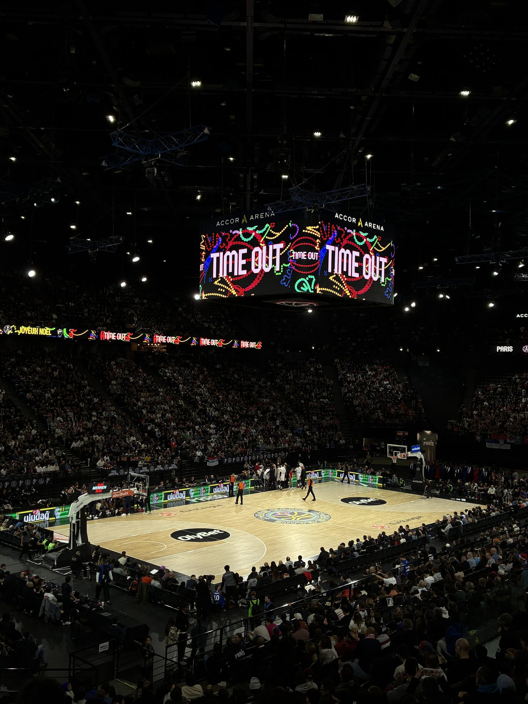
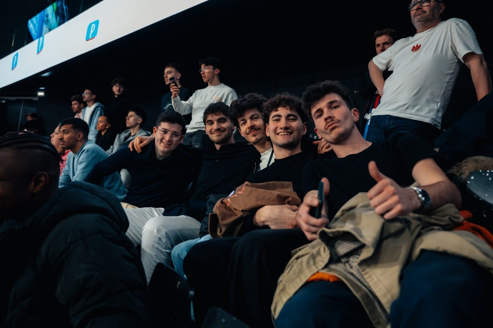
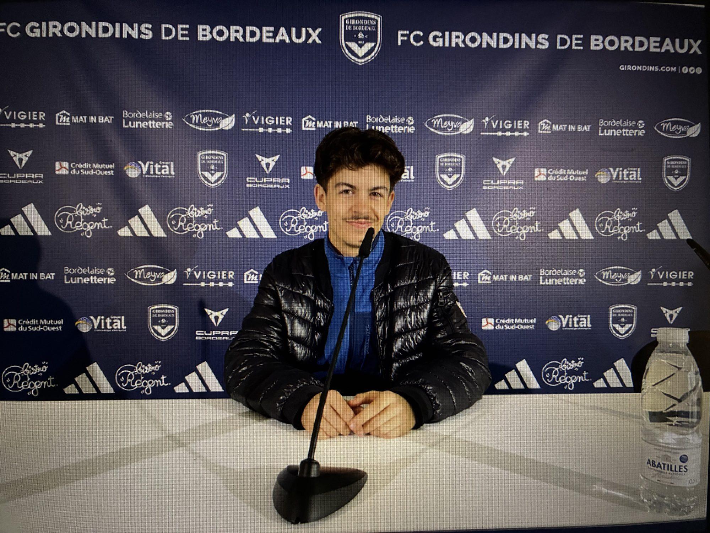
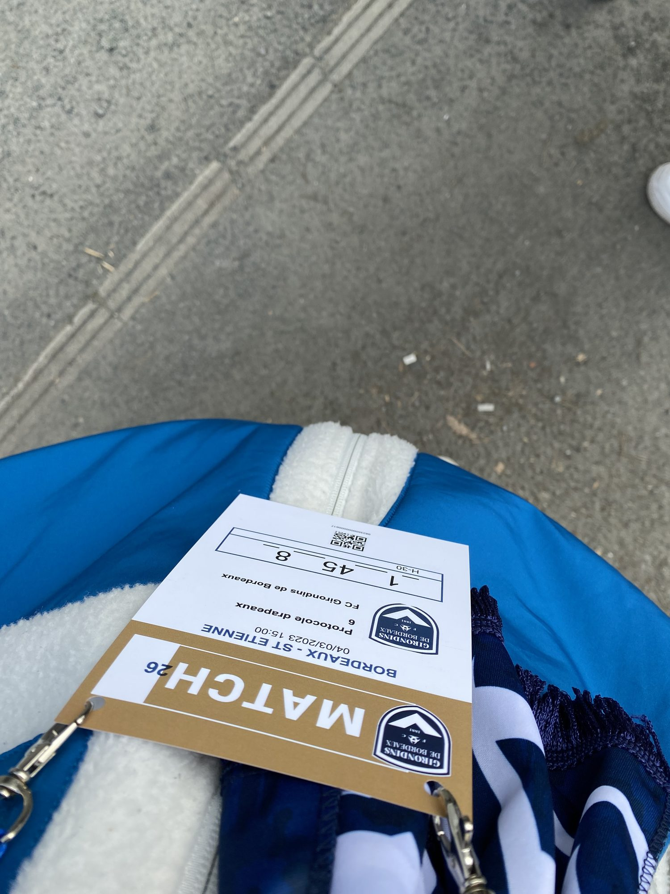
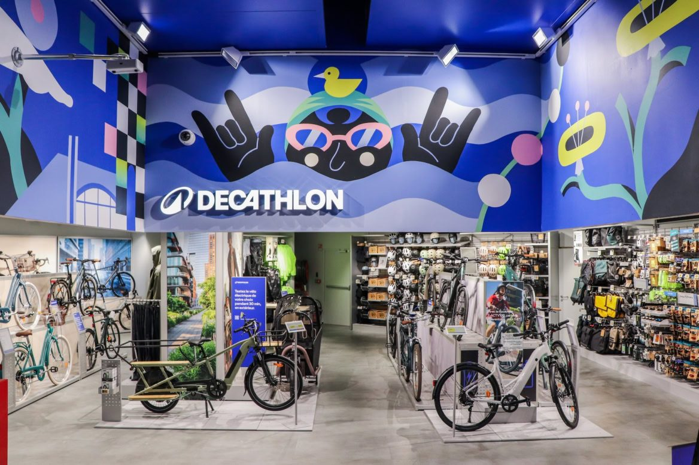

François Maingard — À la recherche d'une alternance
Persévérance,
créativité,
détermination.
Ces trois adjectifs sont les piliers de ma personnalité au travail. Le sport est indéfiniment ma passion, et j'ai construit au fil de mes expériences — Paris Basketball, Asight, Prysma, FC Girondins de Bordeaux — une solide connaissance du marketing digital, de la communication et de la gestion CRM.
Actuellement en Master 1 Marketing Digital, IA & Data à l'INSEEC Bordeaux, je suis convaincu de pouvoir relever le défi d'un poste de Chargé de Communication, de CRM ou de Projets Digitaux dans une entreprise qui allie sport et digital.
Sept. 2025 — Mai 2026
Paris Basketball
Chargé de projets digitaux & CRM
- Gamification et création d'expériences interactives pour les supporters
- Gestion de la relation client B2B et suivi des leads
- Acquisition paid media
- Conception et envoi de campagnes d'e-mailing


Nov. 2024 — Août 2025
Asight
Community Manager, puis Paid Specialist
- Pilotage quotidien des campagnes publicitaires et gestion d'un portefeuille de clients B2B
- Paramétrage, lancement et optimisation des campagnes, suivi des KPIs et reportings réguliers
- Gestion des réseaux sociaux et création de contenus organiques
- Veille sectorielle, benchmarks et mise en place d'un calendrier éditorial
Mai 2023 — Mai 2025
Prysma
Co-fondateur
Bordelais et passionnés de football avec mon associé, nous avons décidé à l'été 2023 de révolutionner l'image communicative et graphique de leur club de cœur. Notre projet a rapidement pris de l'ampleur : en fin d'année 2023, Prysma comptabilisait déjà près de 500 abonnés en quatre mois et avait généré plus d'un million d'impressions sur X (Twitter).
Aujourd'hui, nous travaillons avec des clubs professionnels et des joueurs pros comme Gaétan Weissbeck, milieu de terrain, puis Karl-Johan Johnsson, gardien des Girondins, et depuis peu le jeune défenseur central de 17 ans Mathys Angely.
- Création de contenu pour les réseaux sociaux (TikTok, X/Twitter, Instagram)
- Veille des tendances sportives et digitales
- Travail en collaboration avec des graphistes et créatifs
- Branding et identité visuelle
Mai 2024 — Juillet 2024
Hexacup
Événementiel
- Mise en place et gestion de campagnes d'e-mailing (ciblage, envoi et suivi)
- Organisation d'événements : logistique et coordination des intervenants
- Développement et gestion de partenariats : prospection, négociation, suivi
Bénévole depuis 1 an et demi · Stage Avril — Mai 2024
FC Girondins de Bordeaux
Communication / RSE
Pensionnaire de Ligue 2, ma ville a connu la pire descente en enfer qu'un club de football historique peut connaître. Aujourd'hui, j'ai voulu aider mon club à ma manière : cela fait un an et demi que je travaille les jours de matchs comme bénévole sur la partie logistique/animation des avant-matchs. D'avril à mai, j'ai aussi effectué un stage dans le marketing digital, la communication et la RSE du club.
- Gestion de la boîte infos FCGB et rédaction des posts sur les réseaux sociaux et le site
- Création de campagnes de mailing (Dolist)
- Rapport d'activité et politique RSE d'inclusion
- Événementiel et organisation des avant-matchs


Décembre 2022 — Janvier 2023 · Stage été
Decathlon Mérignac
Vendeur
Une histoire d'amour renouvelée avec Décathlon. L'année dernière, pour valider ma première année de Bachelor, j'avais effectué un stage de deux mois en période hivernale. Cette fois, il s'est déroulé en période estivale : l'apprentissage de la vente m'avait beaucoup plu, ainsi que la formation à la négociation client et à l'achat de produits dans le rayon « seconde vie ».
- Satisfaction et relation client, négociation client
- Techniques de vente, facing et étiquetage

Discutons de votre prochaine alternance
Contact
- 06 67 28 56 41
- maingard.fr@gmail.com
- Basé à Bordeaux / Boulogne-Billancourt